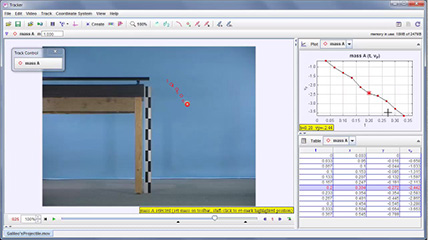

To add this to a page view in Tracker:
- Double-click this node in the Digital Library Browser to open in a web browser
- Copy the URL from the web browser
- In Tracker, open the bottom pane and click Page|New to create a new page view
- Double-click the new page and paste the URL (Ctrl-V)
- Shift-enter to display the page
- Double-click the title to change it
